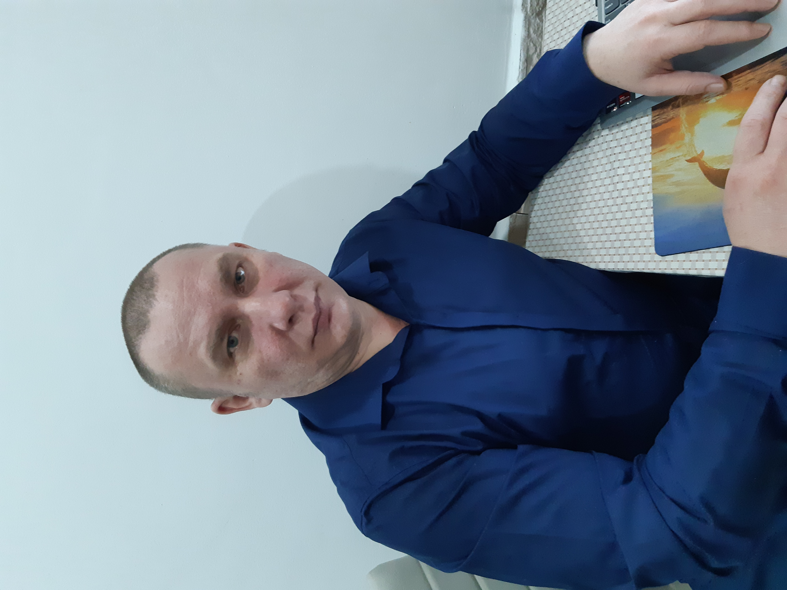

Меня зовут Владимир. Моя основная профессия вот уже более 20 лет - электрик. В 2019 году, в период эпидемии короновируса, в России стало возможно выполнять работу в удаленном формате и некоторые профессии прочно укрепились в нашей жизни как удаленные. В тот момент и у меня появилась мысль о том, что не плохо было бы иметь еще и навык удаленной профессии. С течением времени мысль переросла в идею, а идея постепенно стала мотиватором к выполнению конкретных шагов. Я начал движение к своей цели.
Возможно я уже преодолел тот возраст в котором можно и нужно познавать что-то новое и учиться новому ремеслу. Однако, на все косые взгляды и усмешки хочу сказать: "Это мой путь и моя цель и если это очередные "грабли", то это мои "грабли"" Свой выбор я остановил на изучении языка программирования Python. В настоящее время я обучаюсь на двух платформах одновременно "Нетология - курс фуллстэк разработчик на Python" и "Яндекс Практикум - расширенный курс Python разработчик".
Мой выбор одновременного обучения сразу на двух платформах не случайный. Академический подход к обучению в Нетологии мне не подошел, но я твердо решил научиться программированию. Попытки навести порядок в своих знаниях, приводили лишь к тому как делать нельзя. То есть, ошибок при выполнении задач становилось все больше, а приемы выполнения сложнее, при этом понимания в выполнении конкретного кода становилось все меньше. Вернуть свои средства потраченные на обучения в Нетологии нельзя, но решение стать программистом никто не отменял. Вот поэтому я и решил обучаться одновременно на двух курсах разных платформ.
